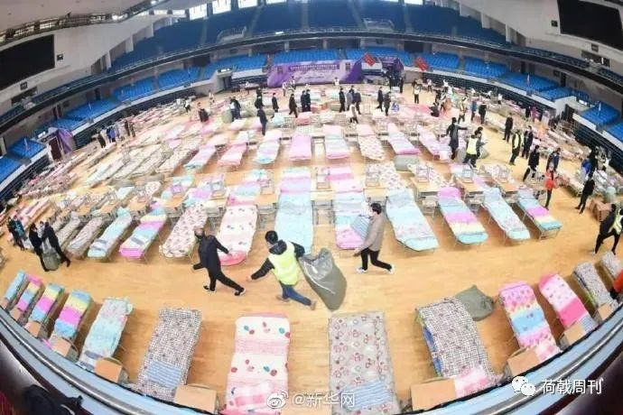
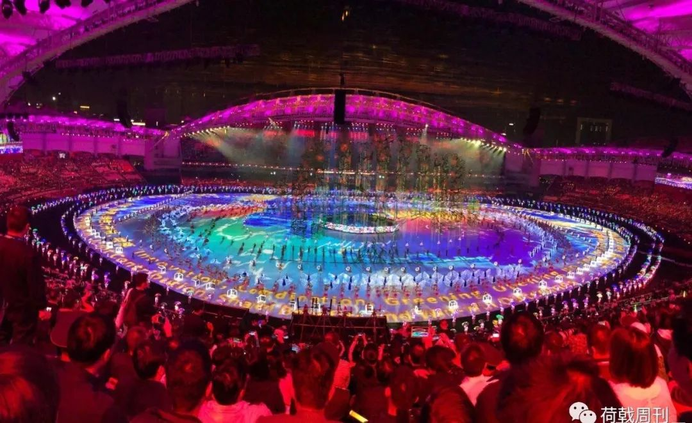
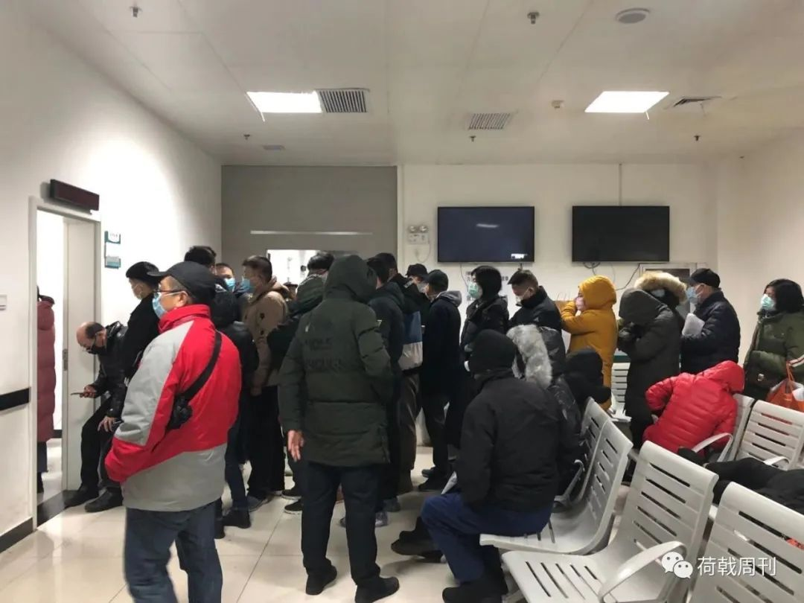

封城后，生活在焦虑和乐观间摇摆 | 我的武汉日志
原文链接 备份链接 若干年后回望，这一定是一段值得铭记的日子。因为新冠肺炎疫情，许多家庭无法团圆。疫情数据地图的每次刷新都令人揪心。我们和千万武汉人在一起，这不只是一句安慰，因为没有人能够置身事外。 之前，我们向用户征集这段时间的故事， …
访谈对象：患者家属/省委干部
采访/整理：画天
访谈时间：2月15日下午2点

我母亲是1月31号出现发热症状的，当时查了CT，说是有问题。一开始我们求助社区，要去医院，结果车子派不出来，什么忙也没帮上，都是我们自己解决的。后来就一直在家吃药，待了有七八天。
2月9号那天晚上，社区通知我母亲，说是要安排转到方舱医院，而且是在东西湖那边的武汉客厅。当时已经是夜里十一点，我们家是在武昌区，距离很远。我母亲还有基础糖尿病，估计到东西湖方舱的时候已经凌晨两三点钟了。所以我们就跟社区申请，希望可以住到近一点的武昌方舱，也就是洪山体育馆，去那里只需要步行十分钟。社区答应了我们的申请。
第二天晚上十点半，社区又通知我母亲去集合，乘坐公交车，将近二十个人，一直到凌晨两点，终于住进了武昌方舱。母亲说折腾得有点受不了，早上还有点感冒。前一天晚上，我们水果湖街道已经发生了转运协调混乱的情况，区长被约谈，结果还是很匆忙。

武昌方舱内景，摄于洪山体育馆
我们水果湖街道就在湖北省委大楼旁边，我和我爱人都在省委机关上班。别人提起来，都觉得水果湖像是武汉的小中南海，好像高人一等似的，人员素质和管理水平应该是引领全市的，但实际上并非如此。我们是老旧小区，没有物业。
回想起来，真的就是没有人重视起来，而且还约谈了那几位医生。说得激进一点，你不能不允许批评的声音存在，对于所谓的传言，以及那些跟主流媒体不一样的声音，应该更慎重地对待。
当初外地的专家到武汉来考察情况，我是知道的，但我们都没有把它放在心上，不会想到这竟然是一件那么严重的事情。特别是1月13号，港澳台的专家组来到湖北，负责接待的是武汉市卫健委。我的一个同事也参与了那次接待，都没当回事儿，后来她的舅妈也感染了。
我们总是相信政府有执行力和前瞻性，尤其是在去年10月，武汉搞了军运会之后，大家士气大增，那种骄傲和不知道哪儿来的自信感就很强。军运会开始之前，长江大桥开始亮灯，要做主题灯光秀。所有的社区都修葺一新，整个城市的面貌都不一样。当时还专门做了重大卫生事故的应急演练，费了很大的劲。
军运会期间，我还专门买票请我爸妈去洪山体育馆看篮球比赛。我妈前两天去方舱医院，就在洪山体育馆。我安慰她说，之前去看比赛还需要买票，现在住里面都不用花钱了。

2019年10月，军运会开幕式现场，摄于武汉体育中心
军运会办得很成功，我们体制内的人都跟外面宣传武汉多好多好，湖北多好多好，新一线，中部崛起，如此等等。那些素材和数据，都烂熟于心。但是一步一步，基层组织和管理的涣散暴露出来，充分显示我们武汉还是存在很大问题的。社区的人也很累，但他们只有任务，没有政策的补给和实质的措施。
水果湖现在的发病率很高，年前大家都没有重视，聚会和老干部新春座谈会特别多，还有大家都知道的那次团拜会。我们机关的事务都正常开展，跟往年没有任何区别。我负责的项目比较多，挺忙的。
1月23号突然封城的前一天晚上，各个单位都通知到了每个党员，第二天上午十点就封城了，那个时候大家也没有想过是有多么严重，但是每天都可以看到救护车，殡仪馆的车子拖走一个又一个，大家慢慢地就开始恐慌了。
你只能通过普通人的这种遭遇来判断政策的执行力度，究竟有没有从心脏达到每一个毛细血管。如果说每一个细胞都OK了，然后你才会感觉整个机体的生命力重新活泼起来。但政策执行好像总是慢一拍，不停跟进，一直没有引领的作用。
我前两天看了一篇文章，说武汉的病床和医护人员数量都是排名全国前三强的。结果最先开始出现疑似病例井喷式增长的时候，试剂盒子跟不上，核酸检测跟不上，CT做不上。1月31日，我妈出现发热症状，去门诊排队，都快虚脱了。

1月22日，武汉协和医院发热门诊，《新京报》记者向凯摄
当时我们也找了单位领导，坦白说就是托关系，但是一般的关系统统都失灵了。我找的是省直机关的一把手领导，属于正厅级，他给我找了好久也没找到病床。当时我还在想，领导出面都找不到，特权都没用了，是不是大家都按照规矩来，有正规渠道去住院。后来发现不是的，病床真的很短缺，简直是比黄金还宝贵，比钻石还稀缺。
当时我们特别慌，就觉得怎么会是这个样子。报道上说殡仪馆的人手都不够用，钟南山院士也出来说会出现那种病情突然加重的情况。对于这个病的恐惧，以及住不上院的现状联系到一起，还有每天微博超话上的那些求助信息，就觉得特别崩溃。那些天过得很郁闷，整宿睡不着觉。
只能说这次的考验面前，湖北省和武汉市没有给出一张及格的答卷，平时考差了就算了。就算平时考得好，那也没用，关键时刻才见真章。
昨天我看了一段警句一样的话，心里特别不舒服，就是说“没有一个冬天不会过去，没有一个春天不会来临。”当时我在加班写材料，也用了这句话。可是回头想想，有多少人失去了父母和子女，他们就永远留在了这个冬天了。
长按二维码向我转账
谢谢
受苹果公司新规定影响，微信 iOS 版的赞赏功能被关闭，可通过二维码转账支持公众号。
原文链接 备份链接 若干年后回望，这一定是一段值得铭记的日子。因为新冠肺炎疫情，许多家庭无法团圆。疫情数据地图的每次刷新都令人揪心。我们和千万武汉人在一起，这不只是一句安慰，因为没有人能够置身事外。 之前，我们向用户征集这段时间的故事， …
原文链接 备份链接 作者：北林 编辑：北林 特别不感谢：给阻止疫情制造麻烦的混蛋们 我听来了许多虚假的、不符合主流的、刻意制造矛盾的流言蜚语; 发这里是告诉大家: 不要相信，不要转发， 都是假的，不要去调查， 尤其是记者们，以下都是假 …
原文链接 备份链接 家住温馨苑的黄新陷入了愁苦之中。她丈夫疑似新冠肺炎，高烧十天，无法进食。因为生病，丈夫有点消极，唉声叹气，虽然还没有检测确诊，但他觉得自己基本就是新冠肺炎了。黄新不敢跟外人说，同事们聊起天来，她也不敢出声。“你家有 …
原文链接 备份链接 凤凰新闻客户端 凤凰网在人间工作室出品 口述：思雨（医院工作人员） 坐标：武汉市硚口区 我是95后，父亲是医生，当初我也想要学医，被父亲否定。他觉得当医生太辛苦了，不适合女生。但我最终还是在2019年7月，成为了武汉一 …
原文链接 备份链接 他们理解小区被封，理解只能选择被塞了四大包汤圆的团购套餐，理解菜价成倍上涨，理解要继续忍受生活上的不便，才有可能早一点等来结束的一天。 文 | 谢婵 编辑 | 小豆 武汉伢王嘉兴给父母打电话，得知小区业主群里推荐 …